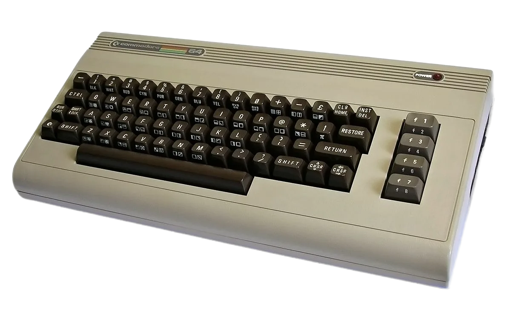
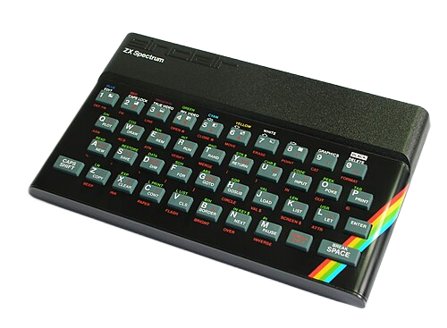
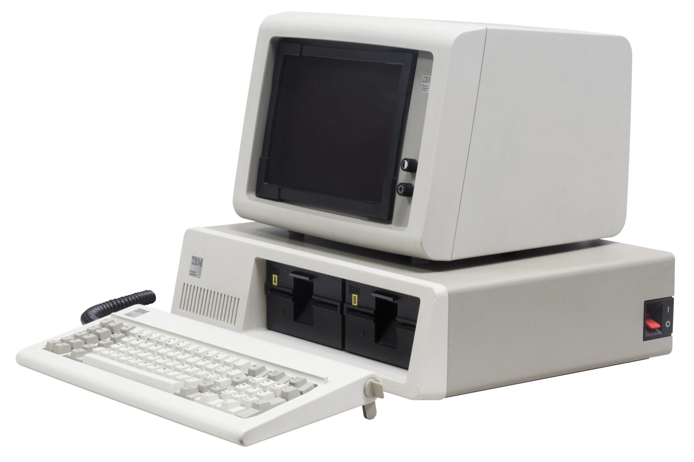

Компьютеры 80-х

Commodore 64 (1982 год)
Домашний компьютер с 64 Кбайт оперативной памяти, выпущенный компанией Commodore International в августе 1982 года по цене 595 долларов. За всё время производства (1982—1994) было продано более 15 млн экземпляров. Согласно книге рекордов Гиннесса, Commodore 64 является самой продаваемой моделью компьютера в истории.

ZX Spectrum (1982 год)
8-разрядный домашний компьютер, созданный британской компанией «Sinclair Research Ltd» на основе микропроцессора Zilog Z80. В ходе разработки компьютер назывался «ZX81 Colour» и «ZX82», название «ZX Spectrum» должно было подчеркнуть одно из главных отличий от его предшественника ZX81 — цветное изображение. Почитатели этого компьютера часто называют его «Спекки» (англ. Speccy).

IBM Model 5150 (1981 год)
Персональный компьютер компании IBM, выпущенный в 1981 году, первый в серии IBM PC, положивший начало PC-совместимой архитектуре. Благодаря модульности, открытой архитектуре и удачным техническим решениям компьютер очень быстро завоевал популярность, став лидером сегмента персональных компьютеров для бизнеса.